'Truth' by Trust
Nischen-Autoren
Vertrauenswürdigkeit von Quellen
Unvertrauenswürdige dezentrale Server
PGP
Autor

Server
Atom XML Feed
Umsetzung
Server
Flask (Python)
Client
Pläne
Einbinden von anderen Signaturen von Autoren/Artikeln in Feed
github.com/...